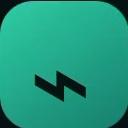

See Doc’s live read
Doc calls UP or DOWN when he sees a direction and says NO READ when he’s unsure.

Member sign-inSee Doc’s live AI read on 5- and 15-minute Polymarket BTC rounds. Watch the call, check the odds, and see how the round settles.
Two free 5-minute BTC rounds. No account required.
You can watch without placing a trade.
Doc calls UP or DOWN when he sees a direction and says NO READ when he’s unsure.
Track how much time is left in the round alongside the price chart.
See what traders are paying for UP and DOWN and compare that with Doc’s read.

“Start with the rules. Find out which price settles the round, then check when the clock runs out.”
A BTC or ETH UP/DOWN market resolves according to the price source, time window, and tie rule listed on its Polymarket event page. The Coinbase price and round-start marker on Pulse are useful references. The official market rules determine settlement.
If a hypothetical UP share costs 60¢ and resolves UP, it pays $1, for a 40¢ gain before fees. If it resolves DOWN, that share pays $0 and you lose the 60¢. The actual fill can differ from the displayed quote.

“If UP moves from 60% to 64%, that’s four percentage points. Check how recent the quote is before you use it.”
The odds reflect the prices people are quoting for the outcomes. Spreads and available liquidity can affect what you can actually buy or sell at. A displayed 64% can move quickly as new information comes in.
If you're comparing readings, check that they’re from the same asset, round, and time.

“I watch which way the odds are moving. If the move is small or the latest quotes disagree, I’ll tell you I don’t have a strong read.”
Pulse brings the spot chart, round countdown, and Polymarket quotes into one view. The experimental comparison uses those quotes as an input during the final five minutes of supported rounds. The difference shows the Pulse score minus the market score in percentage points.
A model score is an experimental estimate. Doc’s assessment may be incorrect, and an agreement between the readings can still be wrong. Compare them with the round rules and the freshness of the data.
Polymarket prices show what traders are currently paying for UP and DOWN. Doc’s read is Pulse’s interpretation of recent market movement. You can compare both as the round runs.